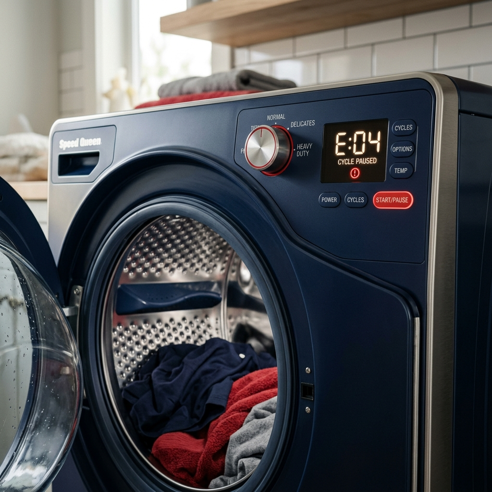

Tukaj je seznam serviserjev v Kopru. Za vašo goro umazanega perila pa poskrbimo mi.
Kako deluje naša pralnica?Serviserji so pogosto zasedeni in na popravilo je treba čakati več dni ali celo tednov. Ne čakajte doma ob polnem košu umazanih oblačil! V naši samopostrežni pralnici Speed Queen v Kopru lahko operete in posušite do 18 kg perila hkrati v manj kot eni uri. Detergent in mehčalec sta že vključena v ceno.
Pooblaščeni servis Gorenje
📍 Ljubljanska cesta 3, Koper
📞 05 663 43 31
Aleš Pucer s.p.
📍 Sermin 70C, Koper
📞 041 697 536
Romi Majnik s.p.
📍 Terenski servis celotna Obala
🌐 Spletna stran: maj-tech.si
📞 041 778 558
*Pralnica Speed Queen Koper ni povezana z zgoraj navedenimi servisi. Seznam je informativne narave.